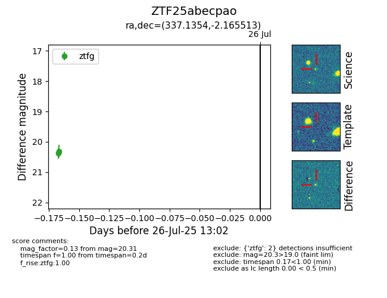

Target ZTF25abecpao at 2025-07-26 13:02, see:
FINK: fink-portal.org/ZTF25abecpao
Lasair: lasair-ztf.lsst.ac.uk/objects/ZTF25abecpao
ALeRCE: alerce.online/object/ZTF25abecpao
alt names
ZTF25abecpao (ztf,fink)
coordinates:
equatorial (ra, dec) = (337.1354,-2.16551)
galactic (l, b) = (62.8897,-47.66673)
photometry
last ztfg=20.31
2 ztfg detections
